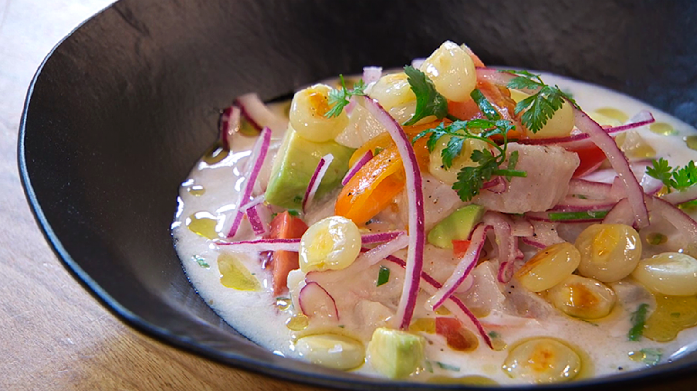

Cebiche
El ceviche es un pequeño aperitivo tradicional de latinoamérica que consiste en trozos de marisco o pescado crudo con una marinada ácida (en jugo de cítricos o vinagre) que "cocina" la carne del marisco. Se le incorporan otros ingredientes como pueden ser cilantro, aguacate, cebolla, tomate, etc., y se acompañan de nachos, tortillas o plátano frito. Estas son todas nuestras recetas.
Juan: Me encantaria saber las receta del Cebiche
Fatay
Las referencias más antiguas sobre la empanada podemos encontrarlas en la cuna misma de nuestra civilización. Ya se conocía un plato cercano a la empanada en la antigua Persia siglos antes de Cristo. También Grecia era conocida por sus masas de cereales que exportaría a todo el mundo occidental. Según los árabes la pasta griega philo para ser rellenada es “la masa más delicada, suave, crujiente, fina, elegante, versátil, que se haya creado en la cocina”. El origen tiene raíz en Grecia y de allí pasaría a Armenia, Marruecos, Medio Oriente en general. Porque fue en esta región, en los áridos paisajes, los aromáticos Zocos y la casa familiar de sombra fresca que la empanada de verdad se hizo popular.
Matias: Me encanta el blog.
Marta ¿Que variedades de fatay hay?
Julieta: Siempre hacemos fatay con mis hijos.